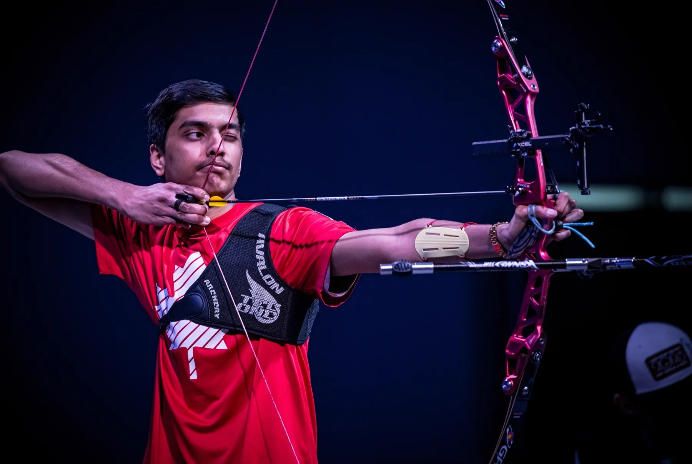

FIG. 12 — ARCHERY
I've shot recurve competitively since 2021, including representing Canada at a couple of international events, and I coach now. Every frame STRAIGHT learned from came off my own shooting line.

CLIP — COMPETITION LINE
Twelve seconds of a real shot cycle: set-up, draw, anchor, release, follow-through.
This is the input format STRAIGHT takes: no markers, no rig, no special camera, just a
clip shot from the side of the line.
MORE ON INSTAGRAM →
I've coached privately since July 2025 as a USA Archery certified instructor, and worked as an assistant JOAD development coach at XSPOT Archery. Most of the job is video analysis: watch the shot, find what moved, prescribe a drill.
Doing that by eye, one athlete at a time, is what made the case for automating it. STRAIGHT → is the same loop, run on every shot instead of the few a coach happens to catch.
Finals broadcasts from the Lancaster Archery Classic, one of the largest indoor tournaments in the world.